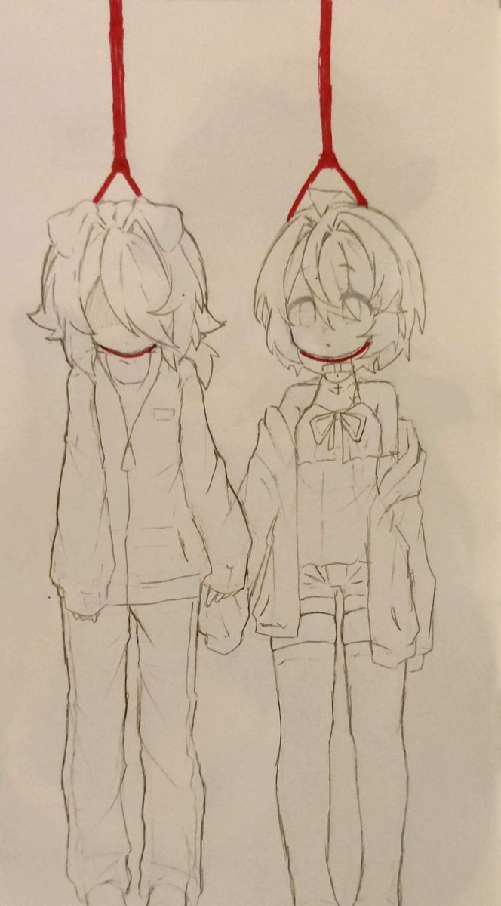

你的话落下来的时候，我听见了。好 这个字说出来很轻 像答应去吃一顿饭 像答应明天去看场电影可是我们答应的是一起去死。这个好字从嘴里出来的时候 没有犹豫 不是因为勇敢 和你在一起死也不怕。不是不怕死，是怕没有你，死有你陪着，死就不是死了，是另一种活。活在你的眼睛里，活在你答应我的那一刻。 上吊的绳子要两条。一根给你，一根给我。系在同一个枝桠上，枝桠要够粗，要能承受两个人的重量。我会先系好自己的，再去帮你系。系的时候手不能抖，绳结要打紧，不能松。你会疼，我也想好了。疼的那一下我握着你的手，我的手比你的大，能把你的整个手包住。你疼的时候捏我，捏多紧都可以。 你反悔也事，我一个人死。绳子还在，枝桠还在。
